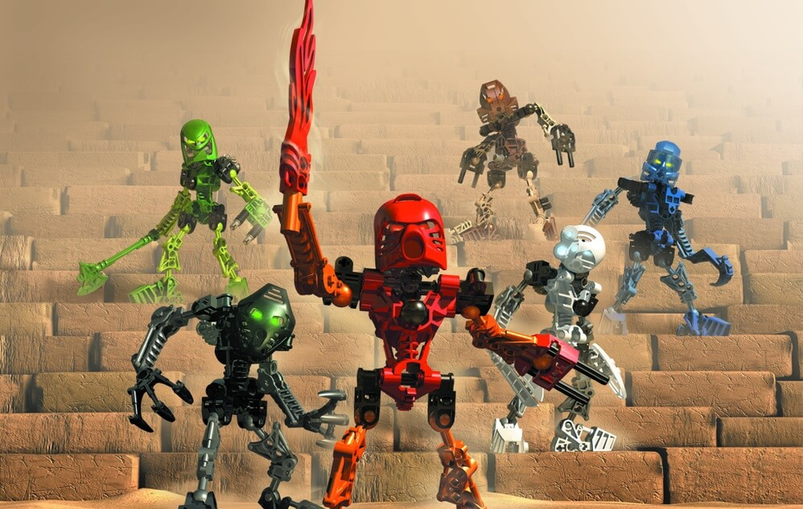

Hello reader, in case you accidentally stumbled across this site, your nostalgia is about to be triggered. This site contains the story of my personal experience of owning Lego Bionicle sets. On the following pages you can find about information about Bionicle in case the reader is not informed enough, my experience with having Bionicle sets, reviews of the sets that I had, and finally the contact page for everyone who desires the share their story.
Personal experience

It would be hard to find a child or an adult who wouldn’t know about Lego, a giant company which is known for creating sets from Lego bricks, varying in themes and ideas of those sets: police force, fire department, franchise-based, etc. Not a lot of people think of Bionicle as this line was closed in 2010, although it was revived again in 2015… and cancelled yet again two years later in 2017. In order to provide context for those who either are uninformed or have forgotten I will briefly explain what Bionicle is.
In mid-nineties Lego was struggling and on a point of bankruptcy, because the most popular Lego sets were franchise-based (in this case, Star Wars) and were desperate to create their own line of Lego sets based on their own intellectual property. This way after a few years of trying and consulting Lego released first line of Bionicle sets, called Toa-Mata and Bohrak. This was a great financial success. Bionicle had its prime years. Unfortunately, Bionicle cancelled due to decline in popularity by the end of 2000s, in 2010 with a failed attempt to bring it back in 2015.
As a child I was always fascinated by Bionicle, mainly due to the style of the toys, it reminded me of a half robotic half organic fusion, memorable images and full of personality. Which was true, as Bionicle was famous for telling its story through games, comics, commercial materials, etc. I was not aware of that, so I would come up with my own stories for the characters. It is important to mention that you could assemble and disassemble the characters in a completely new way, I remember how I would recycle old Bionicle sets by creating giant robots, composed of 3 or 4 smaller sets. Although I really loved Bionicle although Lego always was a relatively expensive toy, I did not have the pleasure of experiencing all existing Bionicle sets, but those I had, I indeed liked.